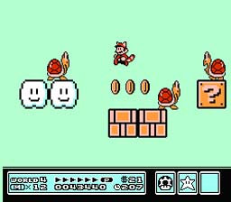

Super Mario Bros. 3 fue lanzada para la NES en 1988 en Japón, en Estados Unidos en 1990 y en Europa en 1991. Mario y Luigi deben salvar siete reinos en el Mushroom World de los Koopa Kids, recuperando las varitas mágicas que robaron a los siete reyes, y salvar nuevamente a la Princesa Peach de las garras de Bowser. Super Mario Bros. 3 es un juego diferente a su predecesor, con más puzzles, enemigos y zonas secretas, introducidos para aumentar el nivel de dificultad. En lugar de moverse en el juego hacia delante de un modo lineal, Mario viaja por el Mushroom Kingdom mediante un mapa, que a menudo se separa en diferentes rutas, dándole al jugador la oportunidad de elegir en qué nivel jugar.  Además, se realizaron algunos pequeños cambios en la mecánica del juego como la posibilidad de mover la pantalla diagonalmente gracias a un chip instalado en el propio cartucho. Super Mario Bros 3 fue todo un líder de ventas en su tiempo, y aún hoy sigue en los puestos más altos de los videojuegos más vendidos de toda la historia con 17,89 millones de copias vendidas (frente a los 15 millones de GTA San Andreas por ejemplo). Fue lanzado después para el Mario All-Star y para la Consola Virtual. También tiene una versión para la Game & Watch.